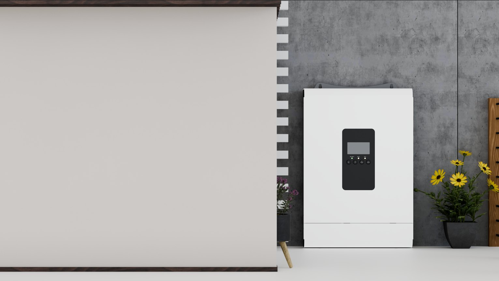
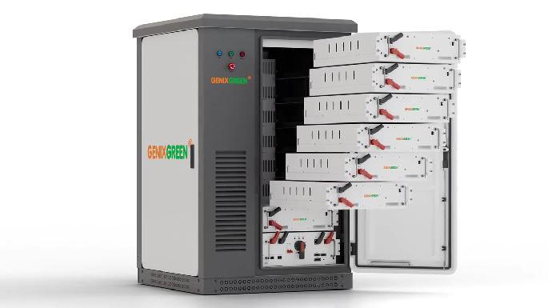
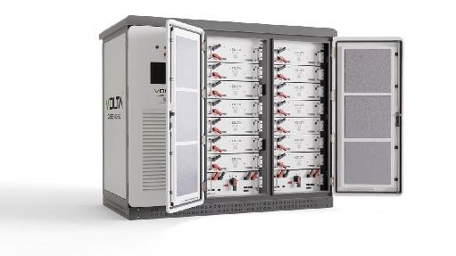

Case 01
角色 建模 · 材质 · 布光 · 渲染
工具 Blender · Cycles · Photoshop 后期
关键动作 尺寸比例还原 · 程序化材质 · 三点布光 · 客户定制渲染视频 5 款 · 电池故障烟雾粒子模拟
结果 产品渲染从外包转为内部自产，公司 95% 的产品渲染图出自这条流程，全部按业务节点交付
产品渲染：先看见，再造出来
实物还没打样，先用 Blender 把比例、材质和光影定下来。 提案阶段能一次说清，比来回改实物便宜太多。


